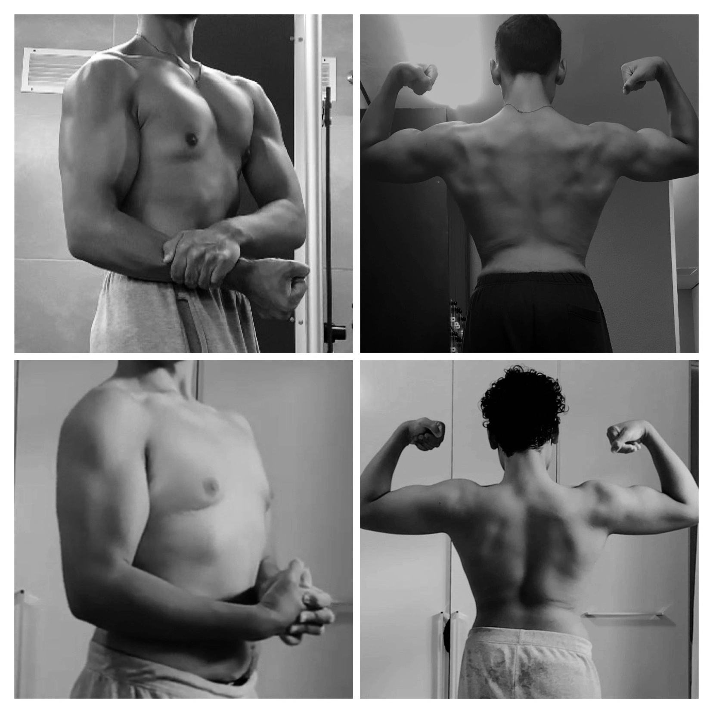

Conheci o treino Low Volume por meio de pesquisas próprias, assistindo vídeos e lendo sobre métodos de treino eficientes. Além disso, amigos próximos compartilharam suas experiências positivas com esse estilo, o que despertou ainda mais meu interesse. A partir disso, decidi experimentar por conta própria.
Após adotar o treino Low Volume, notei uma melhora significativa na minha força e na aparência do meu físico. Os músculos ficaram mais definidos e meu desempenho nos exercícios aumentou. Além disso, o tempo gasto nos treinos diminuiu bastante, o que me permitiu manter consistência.
Com o low-volume além do aumento de força e diminuição da fatiga durante o treino, o meu físico pode se desenvolver junto com minha saúde mental. Esse estilo de treino acaba forçando voce a se acostumar com a proximidade e a verdadeira "falha muscular", que é algo que muda realmente seu mental..
Na foto seguinte tem a comparação minha de aproximadamente 10 meses no treino low-volume e durante um cutting não muito severo:
Eu realmentre recomendo o low-volume para todos aqueles que querem ver reais diferenças no seu físico e mental, porem estes estão avisados que será um método diferente, que pode ser difícil no começo.